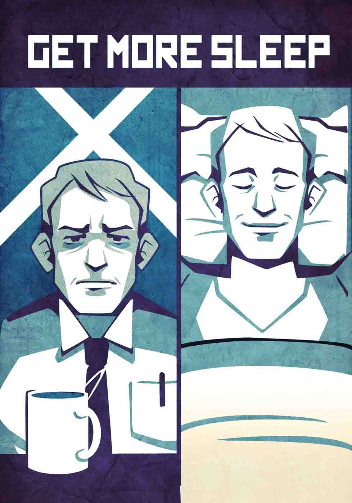

Healthy adults have a basal sleep need, or amount needed for optimal performance, of seven to eight hours per day. Children and teens need more.
A consistent sleep schedule, even on weekends, is critical. Insufficient sleep affects productivity, mental acuity, and even physical health.
Create a relaxing bedtime ritual, and keep laptops out of the bedroom. Beds are for sex and rest.
Short naps help you recharge and pay down a sleep deficit.
Make sleep a priority. Recommit to getting enough.
